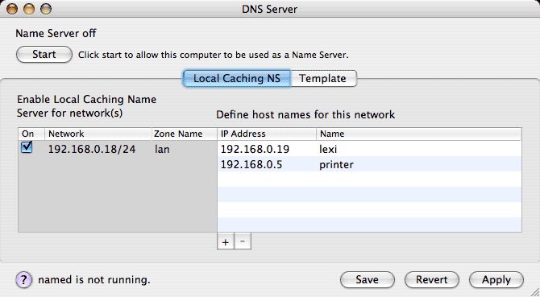
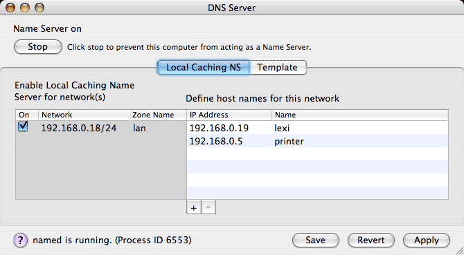
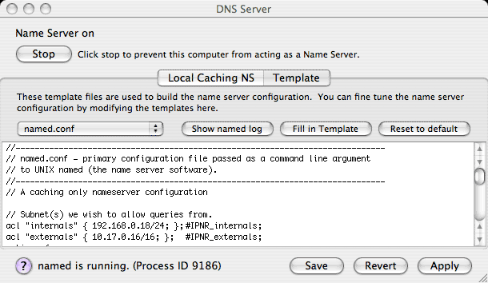
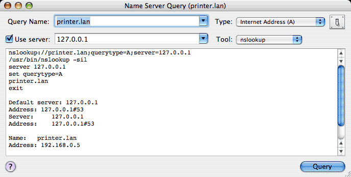

The DNS Server tool allows you to configure the gateway computer running IPNetRouterX as a Local Caching Name Server. Some common reasons you might want to run your own DNS server are:
Selecting DNS Server from the IPNetRouterX tool menu will open the DNS Server window as shown below.

The DNS Server tool is actually a GUI front end for UNIX named (the name server daemon). To begin running a simple local caching name server, select which network interface(s) should accept name server requests from the list on the left, and then press the Start button in the upper left corner.

IPNetRouterX launches UNIX named with the configuration specified. If you would like IPNetRouterX to restore this configuration the next time it is launched, press the Save button.
In addition to acting as a caching name server, you can also specify domain names that can be used to access hosts on your LAN instead of typing their IP addresses. Use the table on the right to define names for hosts on your LAN. The Domain Name System uses "zones" to identify areas of the name space a server is responsible for. For each internal interface corresponding to an IP subnet on your LAN, you can specify a Zone Name which tells the DNS Server how to handle requests in that part of the name space. In the image above, the full name for IP address 192.168.0.5 would be "printer.lan" .
Notice you can edit the Zone Name in the table, as well as the IP Address and Name. To have the server recognize your changes, press Apply.
Once you have enabled a local caching name server, you'll want clients on your LAN to use this server as their primary name server. If your LAN clients are normally configured via DHCP, the default DHCP server settings will take care of this for you. In the DHCP Server tool "Lease Options" tab, there is a field to enter a list of name server addresses to be handed out to clients. If you leave this field empty, or specify an IP address of "0.0.0.0", IPNetRouterX will check to see if a local caching name server is running and substitute the address of that server. If no local name server is running, IPNetRouterX will substitute the name server information the gateway received from its upstream provider (typically from your ISP or the Network Preferences Panel).
The gateway machine itself can also be configured to use the local caching name server by specifying the loopback adddress 127.0.0.1 as the name server address.
When IPNetRouterX launches UNIX named, it tells it to use /var/named_ipnr/named.conf as its primary configuration file. This file contains server options and specifies "zone files" that determine how names and addresses are to be translated. Internally, IPNetRouterX maintains a set of template configuration files. When you press Apply, IPNetRouterX fills in these template files with information specific to your network configuration, and then copies them to the /var/named_ipnr directory. You can view and edit these template files by clicking on the Template tab, and see how IPNetRouterX fills them in by pressing the "Fill in Template" button.

When a template is filled in, IPNetRouterX searches for lines tagged "IPNR_xxx" and replaces them with information specific to your network configuration.
If your LAN incorporates more than one IP subnet, you can define a zone for each subnet and define names within each zone. IPNetRouterX will automatically create the zone files needed to perform forward and reverse address-to-name resolution.
The name server software keeps a log to inform you about what it is doing in /Library/Logs/named.log . An easy way to view this log is to open the Console Application, press the Logs button (upper left), and select "named.log" from the list of logs that appear. The "Show named log" button opens this log in the Console application for you in one easy step.
If you have IPNetMonitorX, you can test how the local name server is working using the "NS Query" tool.

The most widely used DNS software package is called "BIND" and includes the "named" software Apple supplies with Mac OS X. The latest version is described in the "BIND 9 Administrator Reference Manual". You may also find useful material by searching for tutorials on setting up "DNS zone files".